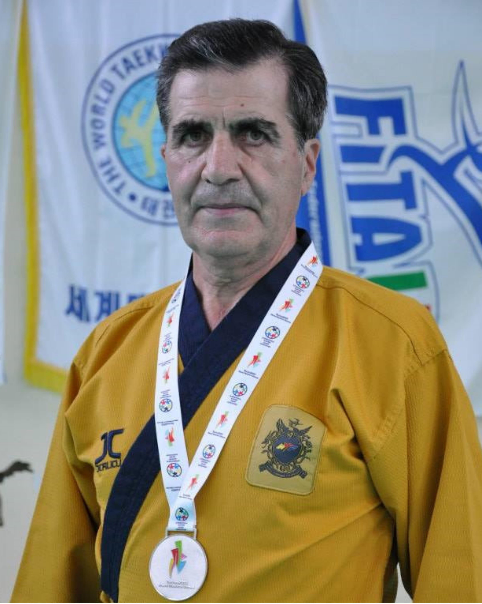
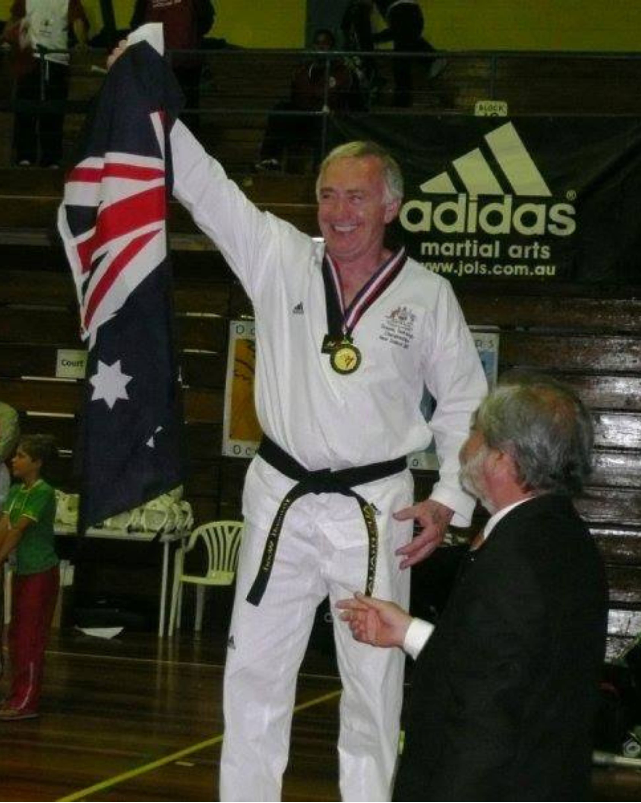
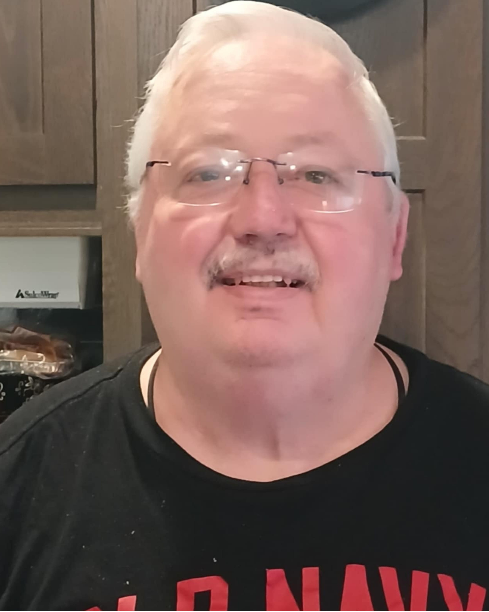
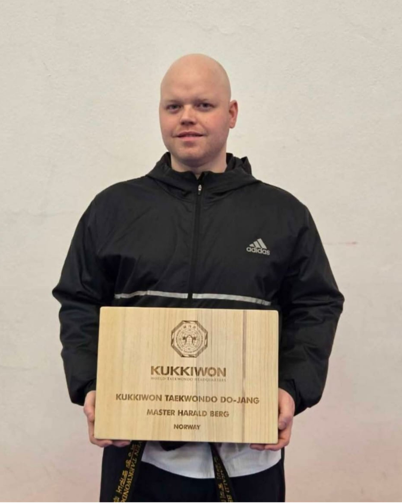
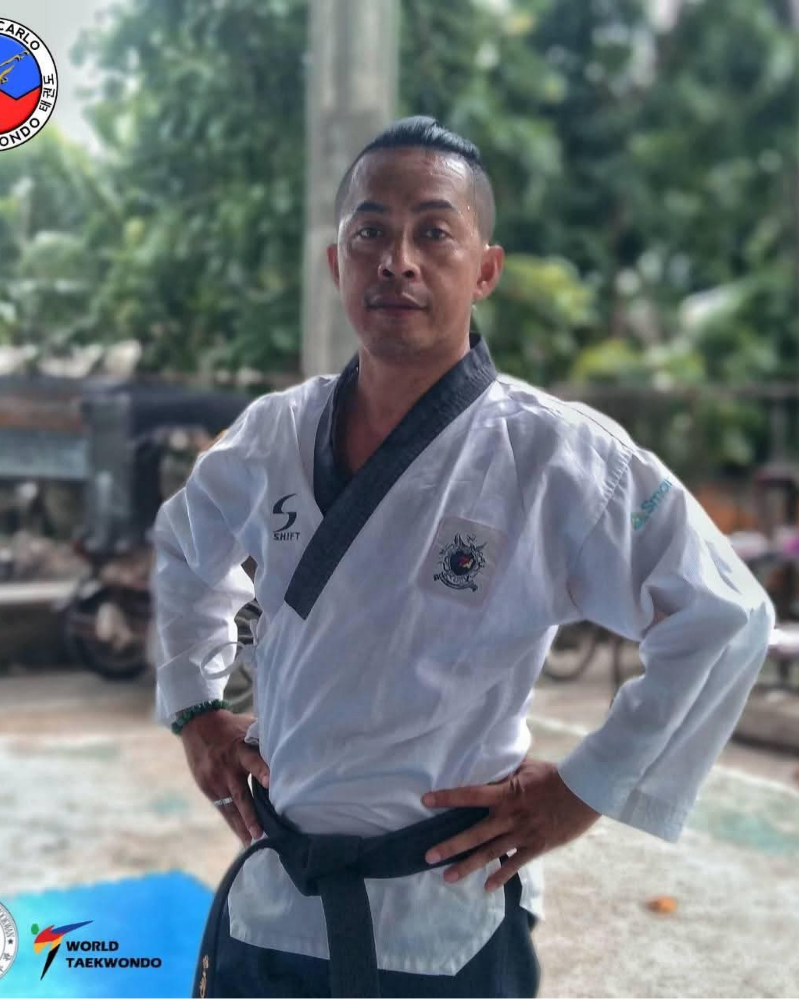
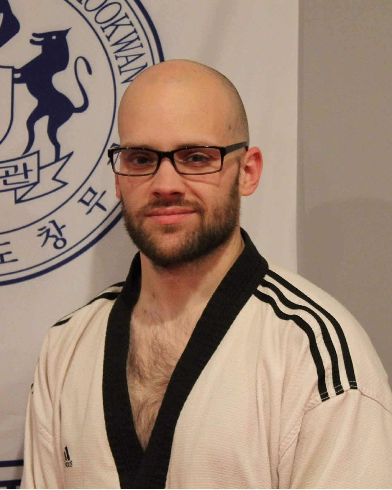
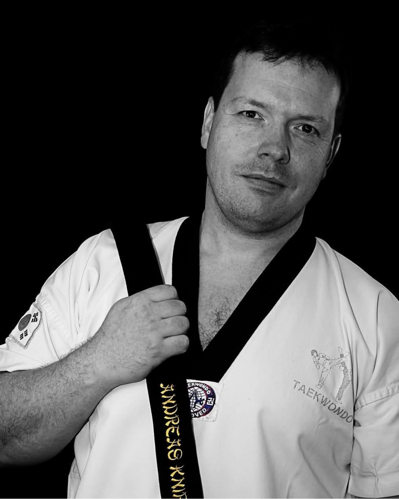
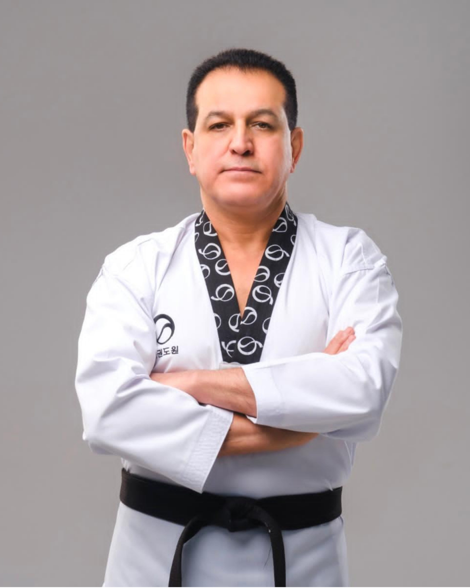
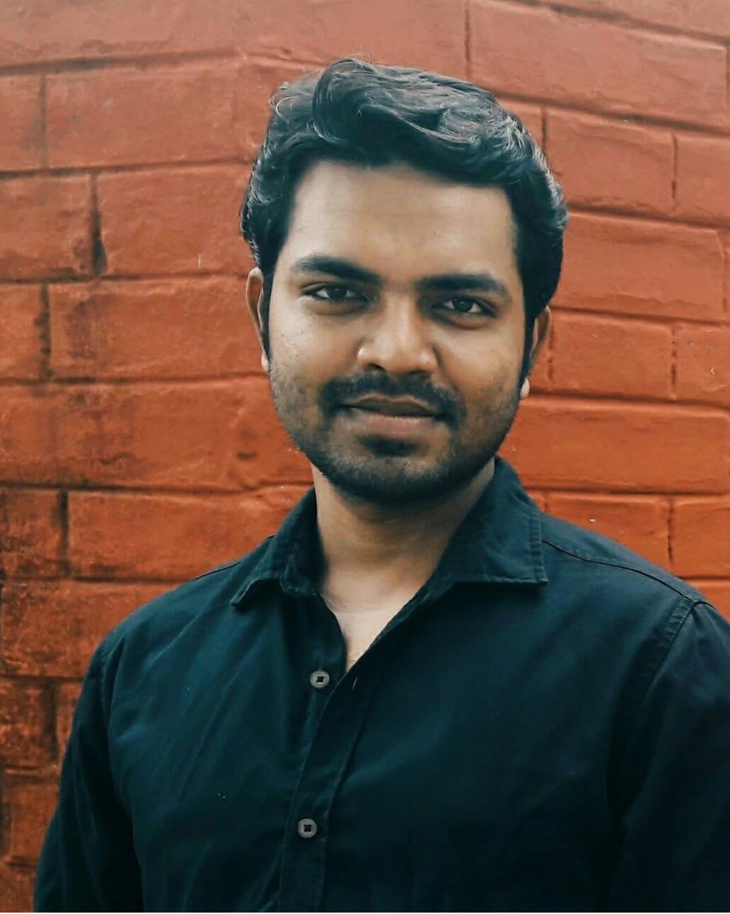
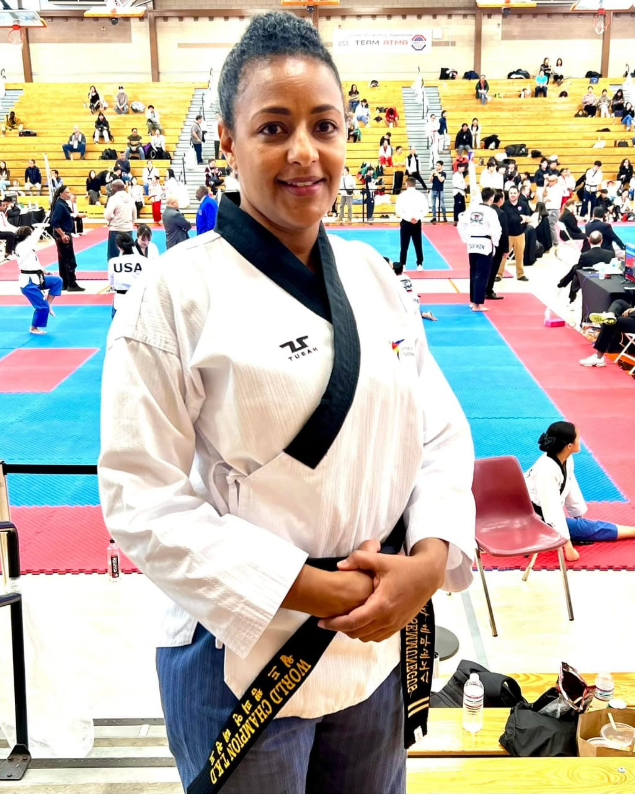

Recognising the masters, coaches, and martial artists who have dedicated their lives to Taekwondo — and to building communities through the art. Under the authority of Grand Master Han Wong, 9th Dan.
The Hall of Fame honours legends whose lifetime contributions to Taekwondo have left an enduring mark on the global community — through competition, coaching, humanitarian work, and leadership at the highest levels.

🇮🇹Based in Brindisi, GM Spinelli's record stands at 100 podium finishes including 75 gold medals and two World Master Championship silvers. Beyond his 45 international online wins, his coaching impact is profound — notably guiding a deaf athlete to a World Poomsae title. Taekwondo is his lifelong purpose.

🇦🇺From Melbourne's Koryo Dragons, GM Wood's journey spans over half a century and 510+ medals. At 84, despite the profound personal loss of two children, he continues to teach, mentor, and prepare for world championships. His "never finish" mindset remains an inspiration to practitioners of all ages.
Forged under GM Yong Chin Pak and GM Russell Wood, GM Harp earned gold at the US Nationals and the US Open. As the founder of Ankeny Martial Arts and recipient of the Han Wong Martial Arts Heritage Award, he continues to teach and compete, stripping away the excuses of age or limitation.

🇨🇦Decades embedding Taekwondo into Atlantic Canada and Quebec under GM Chong Lee and GM Charles Carbain. A Master of Education and Reiki, he now applies his discipline to addiction counselling and mental health research. Author of Perseverance: The Best of the Best. His philosophy: put your resources in place and persevere.
30+ years with L'Equipe Taekwondo Plus and a premier poomsae technician across Quebec. His true impact lies in Para-Taekwondo, tailoring instruction for students with autism and coordination disorders. Despite a severe back injury from a car accident, he has continued to teach and referee since 1989.

🇳🇴Based at Toyen, Master Berg holds 16 gold medals, the Norwegian Cup Overall Championship, and the 2025 Golden Spirit Award. Leading demo teams since 2005 and promoting Taekwondo through national TV and film, he is a community architect who bridges cultural divides to build a global Taekwondo family.

🇵🇭Gold medallist at the 2003 UV Olympics, Master Fernandez has transitioned into a respected instructor and coach in Region 7. His recent gold medals in international online poomsae and speed kicking prove his skills remain razor-sharp. Having overcome financial struggles and injuries, he leads with mental toughness and the indomitable spirit.

🇺🇸Starting Taekwondo at age five and founding Lion's Den Taekwondo, Master Varichak has mentored hundreds under the guidance of GM Han Wong and Master Simon Rhee. A 2005 Chang Moo Kwan Champion who hosts free community events, coaches AAU athletes, and integrates Taekwondo into local schools. Despite multiple surgeries, training never stopped.
Training out of ETG Recklinghausen, GM Brinkmann is a global Changmookwan ambassador. His 2023 World Championship title in Hard Style Forms and 12 international medals speak for themselves. Inspired by the fluidity of water, he lives by the mantra of being "better than yesterday" — his only true goal is to consistently deliver his absolute best.

🇩🇪Founder of Tao-Wulfen e.V. and a prolific coach across Hapkido and Kali-Concepts. With a second-place finish at the 2010 Trexgames in Busan, his current mission is the next generation — specialising in youth development, self-defense, and stick fighting. "A black belt is just a white belt who never gave up."

🇧🇾A global pillar with 9th Dan ranks in both WT and ITF, alongside an International Master Certificate from Korea. Vice President of World Chang Moo Kwan and National Director of the Taekwondo Hall of Fame. With an MSc in Physical Culture and Sports, GM Nouri combines academic depth with elite international coaching experience.

🇧🇩Holding multiple black belts from Bangladesh, Korea Jidokwan, and Kukkiwon, Master Ali has transitioned from gold-medal athlete in Thailand and Bangladesh to respected referee and judge for national championships. Trained at Thailand's international camp and shaped the curriculum at the Bangladesh Police Academy. Now driving Taekwondo across Rajshahi as a PE teacher.
A Poomsae World Champion and cornerstone of the global Taekwondo community. Her legacy is a rare blend of elite athletic achievement and deep humanitarian commitment, leveraging her platform to drive outreach, education, and empowerment in underserved communities. She serves as a global role model, proving that the true spirit of a Grandmaster lies in the power to transform lives.
The Achievers Award recognises practitioners who may not have the highest belts or the longest records, but who have made a meaningful, lasting difference in their communities through Taekwondo.
Over 33 years on the mats, including a decade leading Lion's Den Taekwondo. A Sport Management graduate and 2005 Chang Moo Kwan Poomsae Champion who built a safe, inclusive space through resilience — overcoming major surgeries and COVID-19 by pivoting to online classes. Mentored by Grandmaster Han Wong, he views Taekwondo as a tool for service.

🇺🇸Recognised for relentless grassroots Taekwondo development — bringing martial arts to beginners, youth, and underserved communities who might never have stepped onto a mat. Through local initiatives and hands-on mentoring, she has built a foundation for inclusion, proving that the power of Taekwondo belongs to everyone, regardless of their starting point.
A sustained career of meaningful contribution to Taekwondo — not just one great season. We look for decades of practice, coaching, or development that has shaped the sport.
Going beyond personal achievement to serve students, communities, and underserved populations. Charitable work, grassroots development, and youth mentorship all carry significant weight.
Embodying the core tenets of Taekwondo — courtesy, integrity, perseverance, self-control, and indomitable spirit — in life, not just on the mat. The human being behind the black belt matters most.
Nominations for the Hall of Fame and Achievers Award are accepted year-round. Grand Master Han Wong and the HWI committee review all nominations annually. There is no application fee. There is no politics. Only merit.